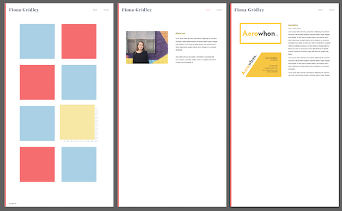
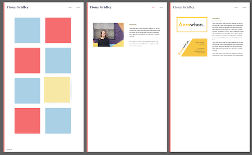

Web Portfolio
web design / web development
Several months ago, I began leanring HTML and CSS in order to create
my first portfolio website. I designed several mockups, such as the
first image shown to the left. Because I still didn't know much about
HTML and CSS, the first iteration of my website was pretty basic. A few
weeks ago, I decide I wanted to attempt to redesign my portfolio, now
with more knowledge of web development and design.
I began by drawing sketches and figuring out what did/didn't work on
my old website. I then moved to Illustrator to do some basic prototyping
digital sketches and design the graphics. Once I felt confident about
what I wanted the site to look like, I began coding. Although creating
my original site was extremely difficult, now that I had some web
development experience the process of redesigning my site was relatively
simple. Through the process of designing and redesigning this website,
I have grown to love web development, and hope to do more of it in the
future.